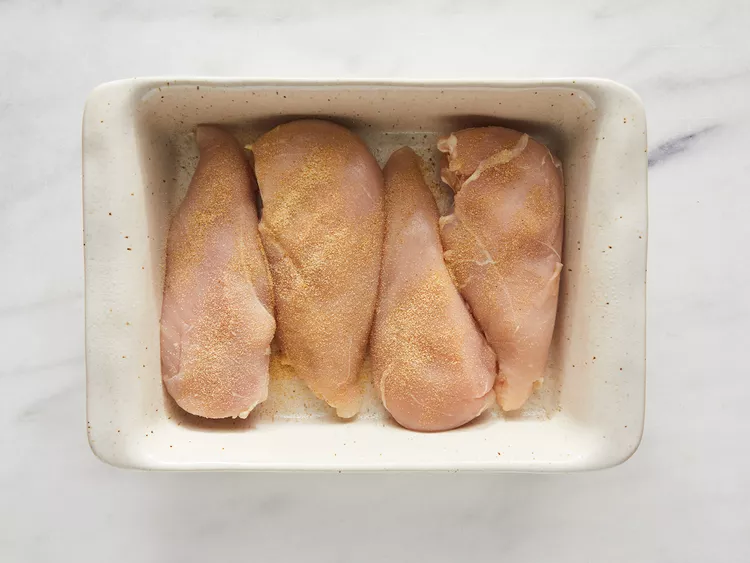
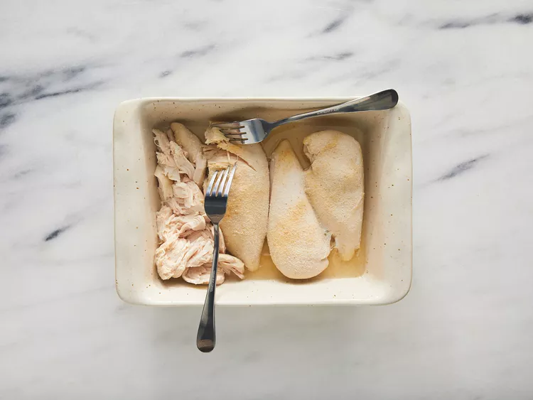
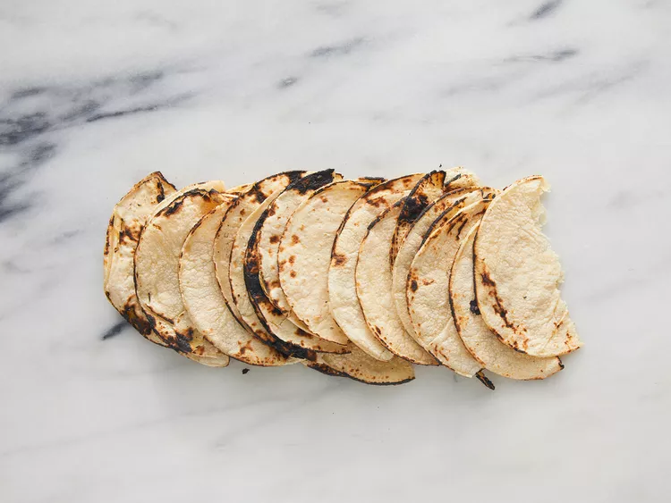
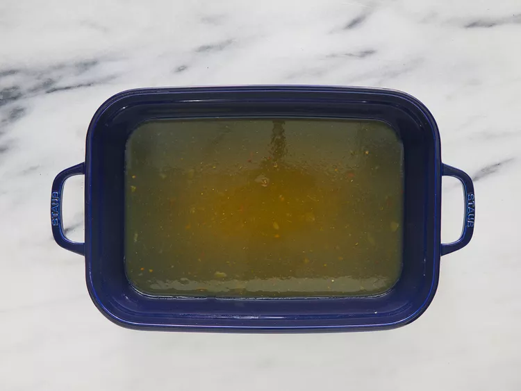
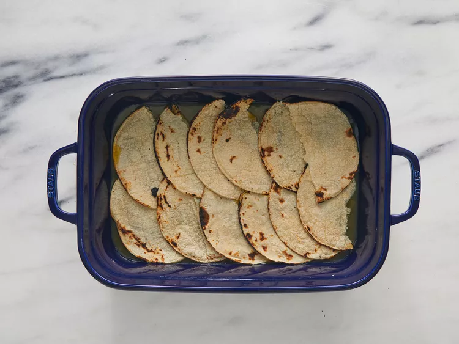
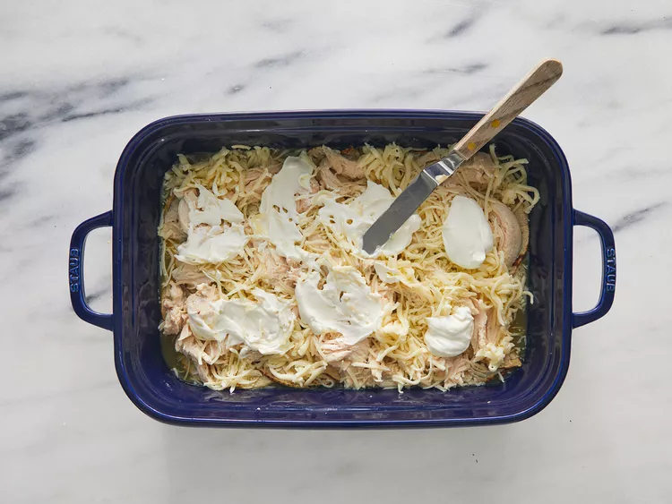
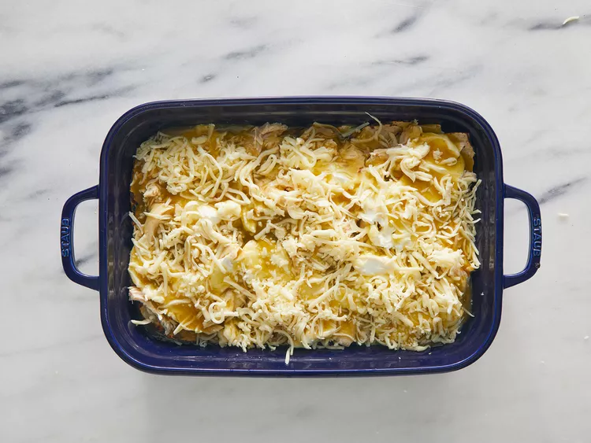

This chicken enchilada casserole recipe is so good that you won't want to miss.
Ingredients
4 skinless, boneless chicken breast halves
garlic salt to taste
18 (6 inch) corn tortillas, torn in half
1 (28 ounce) can green chile enchilada sauce
1 (16 ounce) package shredded Monterey Jack cheese
1 (8 ounce) container reduced fat sour cream
Steps
Preheat the oven to 350 degrees F (175 degrees C). Lightly grease a medium baking dish.
Season chicken with garlic salt; arrange in the prepared baking dish. Bake in the preheated oven until no longer pink and juices run clear, about 45 minutes. An instant-read thermometer inserted into the center should read at least 165 degrees F (74 degrees C).

Cool, shred, and set aside.

Meanwhile, char each tortilla half over the open flame of a gas stove burner using metal tongs until lightly puffed, about 1 minute.

Pour about 1/2 inch enchilada sauce into the bottom of a medium baking dish; arrange 6 tortillas in a single layer on top.


Sprinkle with 1/2 of the chicken, 1/3 of the cheese, 1/2 of the sour cream, and 1/3 of the remaining enchilada sauce.

Repeat layers. Coat remaining tortillas thoroughly with some of the remaining enchilada sauce and arrange on top. Sprinkle with remaining cheese and top with any remaining enchilada sauce.

Repeat layers. Coat remaining tortillas thoroughly with some of the remaining enchilada sauce and arrange on top. Sprinkle with remaining cheese and top with any remaining enchilada sauce.
Cover and bake in the preheated oven for 45 minutes. Cool slightly before serving.